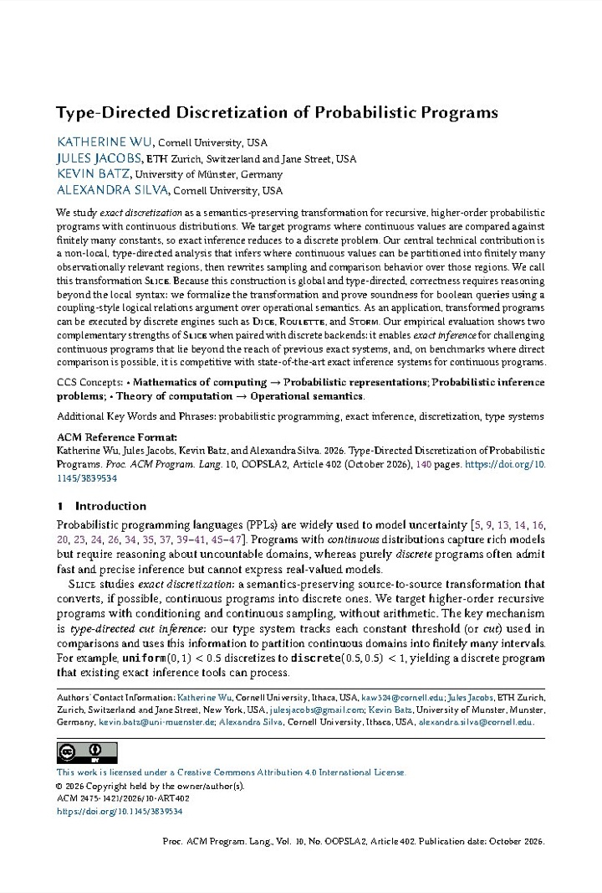

Exact inference is hard for probabilistic programs with continuous distributions. Slice is a type-directed transformation that, when continuous values are only compared against constants, partitions them into finitely many relevant regions; it is proved sound. The discretized programs run on discrete engines such as Dice, Roulette and Storm, reaching programs beyond previous exact systems.

Read the paperWe study exact discretization as a semantics-preserving transformation for recursive, higher-order probabilistic programs with continuous distributions. We target programs where continuous values are compared against finitely many constants, so exact inference reduces to a discrete problem. Our central technical contribution is a non-local, type-directed analysis that infers where continuous values can be partitioned into finitely many observationally relevant regions, then rewrites sampling and comparison behavior over those regions. We call this transformation Slice. Because this construction is global and type-directed, correctness requires reasoning beyond the local syntax: we formalize the transformation and prove soundness for boolean queries using a coupling-style logical relations argument over operational semantics. As an application, transformed programs can be executed by discrete engines such as Dice, Roulette, and Storm. Our empirical evaluation shows two complementary strengths of Slice when paired with discrete backends: it enables exact inference for challenging continuous programs that lie beyond the reach of previous exact systems, and, on benchmarks where direct comparison is possible, it is competitive with state-of-the-art exact inference systems for continuous programs.
@article{wu2026slice,
title = {Type-Directed Discretization of Probabilistic Programs},
volume = {10},
ISSN = {2475-1421},
url = {https://doi.org/10.1145/3839534},
DOI = {10.1145/3839534},
number = {OOPSLA2},
journal = {Proceedings of the ACM on Programming Languages},
publisher = {Association for Computing Machinery (ACM)},
author = {Wu, Katherine and Jacobs, Jules and Batz, Kevin and Silva, Alexandra},
year = {2026},
month = Oct,
pages = {2435--2462}
}